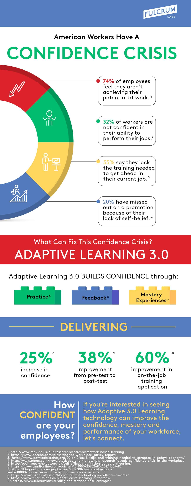

Confidence serves as the bedrock upon which we build our aspirations and pursuits. It empowers us to take risks, embrace challenges, and seize opportunities that propel us towards our goals. Without it, even the most talented individuals may find themselves held back by fear and hesitation, unable to fully realize their potential.
A lack of confidence can permeate every facet of our lives, hindering our personal relationships, career advancement, and overall well-being. Individuals grappling with low self-esteem may shy away from asserting themselves, settling for less than they deserve, or sabotaging their own success due to feelings of inadequacy. Moreover, the mental toll of constant self-doubt can lead to anxiety, depression, and a diminished sense of self-worth.
Addressing the issue of low confidence is not merely about superficial self-improvement; it is a fundamental step towards unlocking our true potential. By cultivating confidence, individuals cultivate resilience, adaptability, and a positive mindset that enables them to navigate life's challenges with grace and determination. Moreover, fostering a culture of confidence within communities and organizations fosters creativity, innovation, and collective growth.
Confidence is not a static trait but a skill that can be cultivated and nurtured over time. By recognizing its importance, understanding its effects, and taking proactive steps to address low confidence, individuals can embark on a transformative journey toward self-assurance and fulfillment. Let us embrace the power of confidence and unlock our limitless potential.


:max_bytes(150000):strip_icc()/Signs-of-low-self-esteem-5185978-V2-dfa2eb84605e4c3e94eda29566881ce1.png)
Low confidence is closely linked to mental health issues such as anxiety, depression, and low self-esteem. Constant self-doubt and negative self-perception can erode one's mental well-being, leading to chronic stress, feelings of inadequacy, and a diminished sense of self-worth. Left unaddressed, these issues can significantly impact overall quality of life. They may be hesitant to express themselves authentically, fear rejection, or perceive themselves as unworthy of love and acceptance. This can lead to difficulties in building meaningful connections and establishing healthy relationships.

Those lacking in confidence may avoid taking on new challenges, advocating for themselves, or pursuing career advancement opportunities. As a result, they may stagnate in their careers, miss out on promotions, or settle for jobs that do not align with their potential.
Research suggests a correlation between low confidence and adverse health outcomes. Individuals with low confidence may engage in unhealthy behaviors such as substance abuse, poor dietary habits, or lack of physical activity as coping mechanisms. Over time, these behaviors can contribute to the development of chronic health conditions and reduce life expectancy.The pervasive effects of low confidence can have a profound impact on overall well-being and quality of life. It can lead to feelings of stagnation, unfulfillment, and a sense of being stuck in life. Without confidence as a driving force, individuals may struggle to pursue their passions, set meaningful goals, and lead fulfilling lives.
Resorces